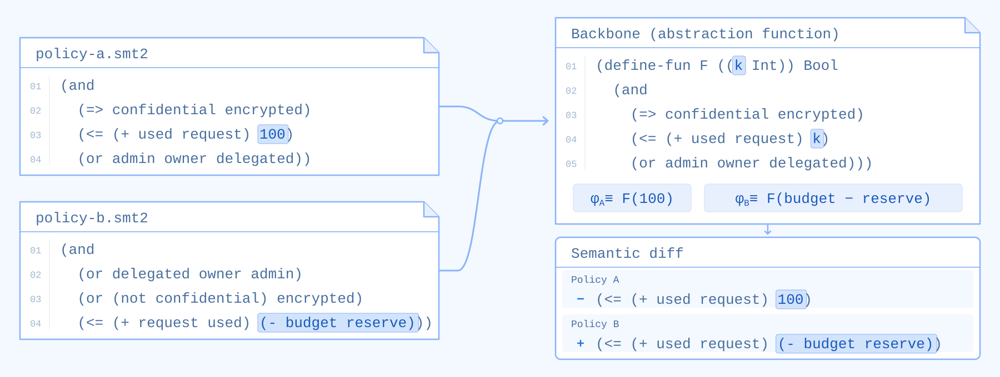

· AWS AI Blog
Semantic diffing of formal policies
We use anti-unification to find what two policies share and where they differ.
Rémi Delmas and I wrote about semantic diffing on the AWS AI Blog. Local rewrites let us recognize equivalent expressions and compress shared logic into a common backbone (an abstraction function). The remaining differences are the parts to review.

To make this scale, we use a semi-persistent e-graph. It handles equivalent reorderings and regroupings natively, keeps representations compact, and supports efficient backtracking.
This makes reviews easier in formal verification workflows involving languages such as Cedar, Dogwood, SMT-LIB, and Lean. Comparisons use the equivalences declared for the chosen encoding.